昭和寺/長野県
大阪万博のラオス館がお寺に転用されているという話を聞いたので行ってみた。
場所は長野県、霧が峰。
高原の木々の合間から建物が見えてきた。
真っ赤な本堂はいかにも東南アジアの仏教建築を彷彿とさせる。
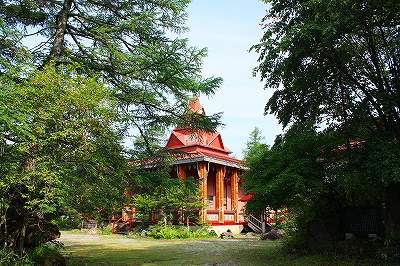
訪れたのは7月。しかし朝だったせいか寒い寒い。
こりゃ冬は相当な寒さ…どころかすぐ近くにスキー場があるというコトは冬は雪に覆われてしまうのだろう。
雪景色の異国風の仏堂、というのもある種見ものですね。
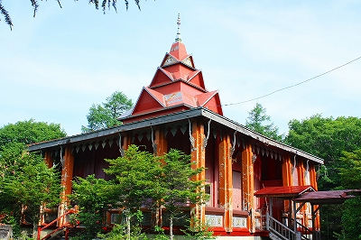
ラオスの首都、ビエンチャンにある名刹、ワットシーサケットの経蔵を模したものと思われる。
のでお寺に転用するには全く問題なし、むしろお寺に転用するのが最良の方策といえよう。
ビエンチャンといえばワットシーサケットとタートルアンが2大有名寺院。
私？ビエンチャン行きましたよ。でもこんな寺しか行ってないもん。ワットシーサケット観てないっす。
ちなみに愛☆地球博のラオス館にはこの建物と同じ形式の建物が展示されていた（もっと小さかったけど）。
そう考えるとラオスを代表する建築様式なんでしょうね。
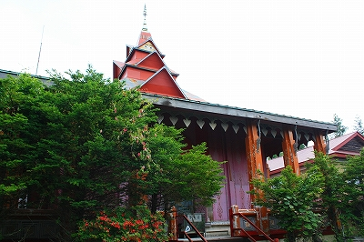
柱飾りや軒飾り、コーナーの装飾など万博のパビリオンだった割にはちゃんと作ってある。
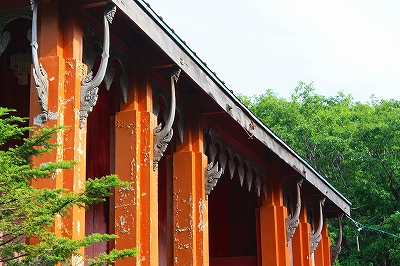
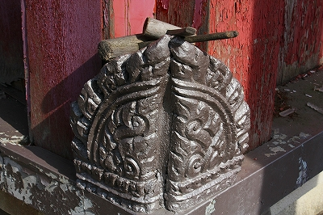
そんな中、印象的なのは塔の部分に描かれている目玉。
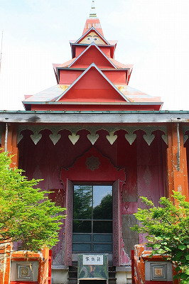 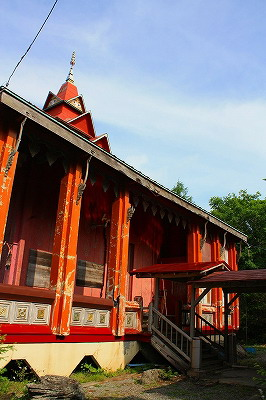
ネパールの目玉寺として有名なボダナードをリライトしたもの。
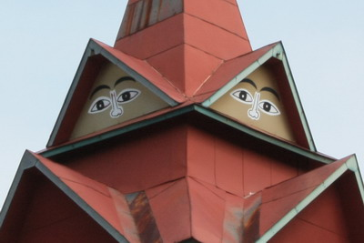
どうもここに移築されてから暫く経ってから描かれたらしい。
遠目に見る分には立派な建物だが、そこは元万博パビリオン。築40年ですよ。
かなりあちこちが痛んでいる。
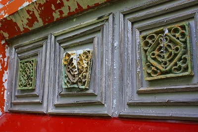 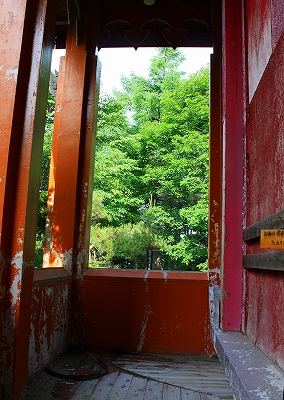
階段とか落ちちゃってるし。
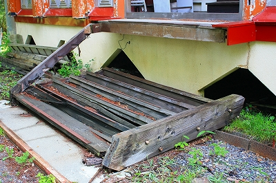
やはり積雪のあるお土地柄ゆえ建物の持ちも悪いのだろう。
かなり痛々しい状況だ（※）。
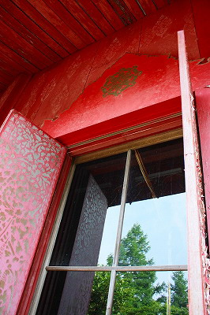
扉が開いていたので中の様子をガラス越しに拝見。
中央に3メートルほどの金色の観音像が見える。
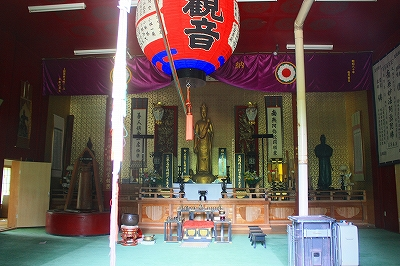
この寺の由来は実にユニークだ。
戦時中、中国に出征した仏教学者の山崎氏なる人物が日中双方の戦死者を悼み、世界平和のために観音像を建立しようと勧進した。
その結果、金色の観音像が完成。大阪万博の際、七重塔を象った古河パビリオンの前に設置したのだという。
（余談だが古河パビリオンの七重塔の相輪部分のみが東大寺の大仏殿の近くに建っている）
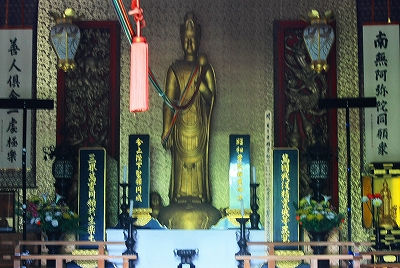
そして万博閉会後、ラオス館を引き取り現在の霧が峰の地に移築し、本尊として金色の観音像を納めた、というわけ。
つまりこのお寺の発祥の地は大阪万博なのである。
お寺は世界平和同願会という団体が管理しており、年に一度戦没者の慰霊法要を行っている。
逆に言えば頻繁に使われているお寺ではない、ということ。
隣の研修所との間にはブランコが寂しそうに揺れていた。
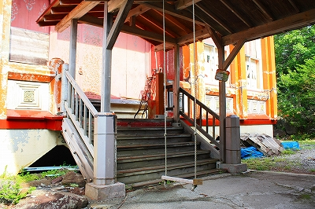
たった半年の命だった筈なのに40年も生きながらえた建物とあっけなく未来が吹っ飛んでしまった戦死者たち。
何とも皮肉な対比に運命の不思議さを感じます。
後日談
大阪の万博記念館（EXPO’70パビリオン）でラオス館の写真を見た。
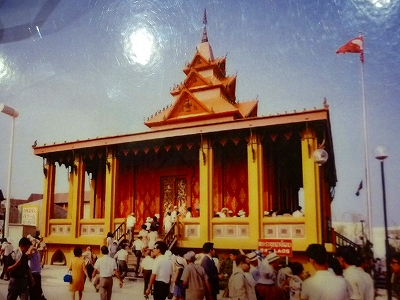
万博開催時は塔に目が描かれてないのがお分かりいただけるかと思う。
なおCGで当時の様子を再現していた。
手前左が件のラオス館、手前右がネパール館、左奥がアフガニスタン館、右奥がカンボジア館。
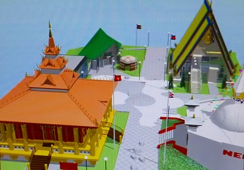
大阪万博のパビリオンで花形といえば住友童話館や東芝館、タカラビューティリオンのような当時最先端の建築思想を反映させたもの、日立グループ館やガスパビリオンのような親しみのあるカタチのもの、オランダ館やスイス館、ソ連館のような構造的にダイナミックなもの、などだった。
そんな中、アジアのパビリオンは徹底して自国の伝統的建築様式を前面に押し出したパビリオンを設計している。
タイ館、カンボジア館、ビルマ館、ネパール館、ベトナム館、香港館、マレーシア館…
私は万博に遅れた世代なので当時の熱狂的な空気を直に感じていないのだが、少なくとも子供心に雑誌や新聞、テレビで見た限りこれらの伝統的な様式を用いたパビリオンは「何だかカッチョ悪いなぁ〜」と思っていた。
古河パビリオンの七重塔とかもね。
日本人にとっては未来を強烈に感じさせる前衛建築展覧会と化していた大阪万博だが、実はこういった伝統的なアイデンティティに基づいたパビリオンも数多くあったのだ。
空中自動車とかロボットとか超高層ビルとかでメモリが一杯になっちゃってる低容量のチビッコの脳（略して低脳ね）には思い浮かぶすべもない伝統的な建築をモチーフにした現代建築。
しかしそれもひとつの万博建築のスタイルなのだ。
参照；動物園、B級SPOT大好き！〜ARAKAWA'S HOME PAGE
※昭和寺では本堂補修の緊急募金を行っています。
昭和寺のホームページにて募っておりますので協力されたい方はご覧ください。
2009.07.
珍寺大道場 HOME